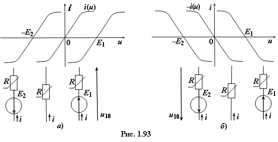

Для цепи с двумя узлами (рис. 1.92)
токи ветвей можно определить графически, построив графики ВАХ i1(u),
i2(u) и i3(u) ветвей на основании уравнений, записанных относительно узлового напряжения u10 = u:
u10 = E1 − i1(u)R1,
u10 = − E2 − i2(u)R2,
(1.59)
u10 = − R3i3.
При построении графиков ik(u) ветвей руководствуются следующими положениями:
• если ветвь наряду с резистивным двухполюсником, ВАХ i(u) которого проходит через начало
координат (рис. 1.93а), содержит источник напряжения с постоянной
ЭДС, то ВАХ двухполюсника будет смещена на величину ЭДС E1 (или Е2) по оси напряжения u вправо (или влево) (рис. 1.93а) в зависимости от знака ЭДС в правой части уравнений (1.59);
• если в уравнениях (1.59) ВАХ ik(u) k-й ветви (произведение Rkik(u)) имеет знак минус, то она строится в обратном направлении (рис. 1.93б).
С учётом знаков ВАХ R1i1(u), R2i2(u) двух нелинейных R1, R2
элементов и ВАХ R3i3(u) линейного R1 элемента в системе (1.59) на рис. 1.94б построены графики ВАХ i1(u), i2(u) и i3(u) ветвей схемы в зависимости от узлового напряжения u10 = u.
Если токи в ветвях схемы направлены к
узлу 1 (см. рис. 1.92), то решение системы уравнений (1.59) (нахождение токов ветвей) определяется точкой пересечения кривой Σik(u) = i1(u) + i2(u) + i3(u), полученной суммированием ординат ВАХ ветвей при одном и том же узловом напряжении u10 = u, с осью напряжения.

Через эту точку проводим пунктирную
линию AA', ординаты точек пересечения которой ВАХ ветвей определяют
значения токов i1, i2, i3 (см. рис. 1.94б). Ток i2 имеет
направление, противоположное выбранному.
Если же токи в ветвях схемы по отношению к узлу 1 имеют различное направление, например i1 + i2 − i3 = 0, то решение (1.59) определяется точкой
пересечения кривой i1 + i2 с ВАХ ветви 3, по которой протекает ток i3.